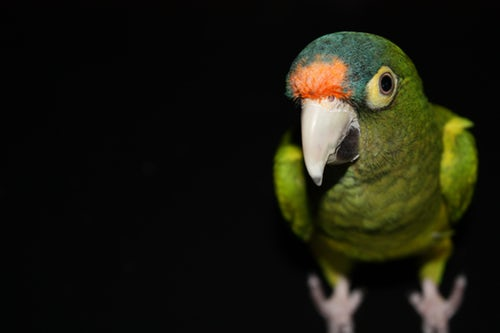
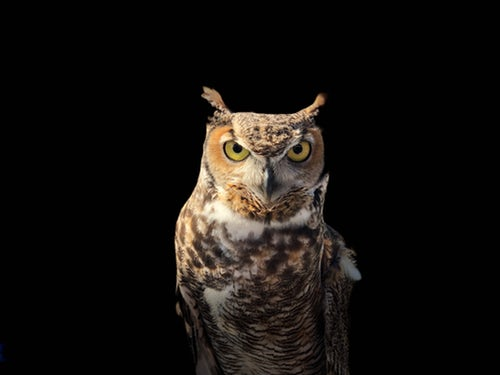
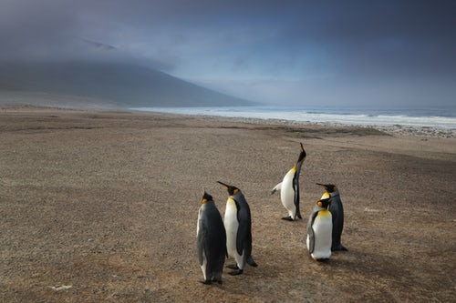

There are numerous species of bird found in a wide variety of habitats all round the world. Birds are one of the most thriving groups of animals on the planet as they generally have their habitat to themselves.
Birds can be easily distinguished from other animals due to their sharp, pointed beaks, thin legs, wings and feathers covering their bodies. Although all birds species have wings, some are actually flightless animals that only use their wings for balance and not for flying. Where other birds, such as penguins, use their wings for swimming.
Birds are often omnivorous animals, generally eating nearly anything that they can find. Most species of bird survive on a diet primarily consisting of insects and plants such as fruits, nuts, berries and seeds.
Birds are also distinctive in the fact that they lay eggs in a similar way to other animal groups such as fish and reptiles. Birds often make nests in the trees or on the ground in which to lay their eggs.
Parrots, also known as psittacines, are birds of the roughtly 393 species in 92 genera that make up the order Psittaciformes, found in most tropical and subtropical regions. The order is subdivided into three superfamilies: The Psittacoidea, the Cacatuoidea, and the Strigopoidea.
Owls are birdds from the order Strigiformes, which includes about 200 species of mostly solitary and noctural birds of prey typified by an upright stance, a large, broad head, binocular vision, binaural hearing, sharp talons, and feathers adapted for silent flight.
Penguins are a group of aquatic flightless birds. They live almost exclusively in the Southern Hemisphere, with only one species, the Galapagos penguin, found north of the equator. Highly adapted for life in the water, penguins have countershaded dark and white plumage and their wings have evolved into flippers.
